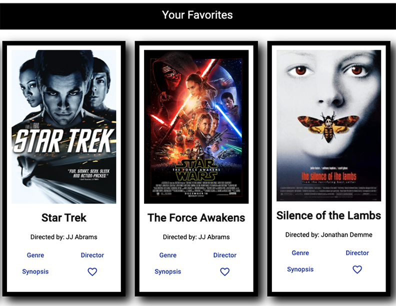
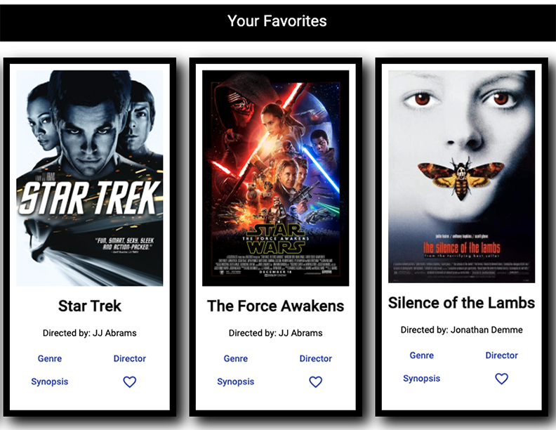

This project was a reworking of the former myFlix project where I built the Full Stack of the application. I was able to reuse the backend database and API and tie it in to a new front end built with Angular.
This project was the final round in the Career Foundry Full Stack Web Development Course. Angular is a highly organized and very robust Typescript Framework. The purpose of doing this exercise was to take something already created with a JavaScript framework (React) and rebuilt it with a different tool.
My objective with this project was to work at making the interface more polished and thus look more purposeful. Of course, having experience with TypeScript and Angular is a very good expereince to have in the current web development world. I am interested in learning more about what Angular can do as I progress in my career.
My approach in this project was to take the color scheme down to almost nothing. I used a black and white theme to bring out the vibrant colors of the film images, but also to keep focus on the details and prebuilt elements of Angular. I found some of the prebuilt toosl of Angular to be slightly too rigid, so I made use of some simple HTML changes to replace the Angular Materials with regular div elements. I am ultimately quite pleased with how different of a feel came out of using another tool to build the same thing.
The biggest challenges in this project were learning Typescript, and navigating the
routing of Angular. At first, the specific and rigid rules of Typescript were a challenge
to work through. Having to define a type expected for each function, seemed - at first -
to be excessive and redundant. As time went on, however; Ifound the specifics of Typescript
to be extremely helpful, specifically in debugging. When an error was encountered Typescript
easily pointed me to the exact location of the error and the exact reason for the error.
I did not have to do a lot of searching around and looking through the developer console.
Every error, or mostly every error, stared me right in the face and told me how to fix it.
The second challenge similarly turned into a boon. The routing of Angular seemed, at
first, to be overly complicated. After building a few components, however; the pattern revealed
itself to be exceptionally repetitious. The way every component contained a typescript file,
an html file, and a css file turned out to be brilliant and easily duplicatable.
I can absolutely see why Angular is the preferred framework and library for large applications.
Role: Lead Developer
Tutor: Ebere Iweala
Mentor: John Behan